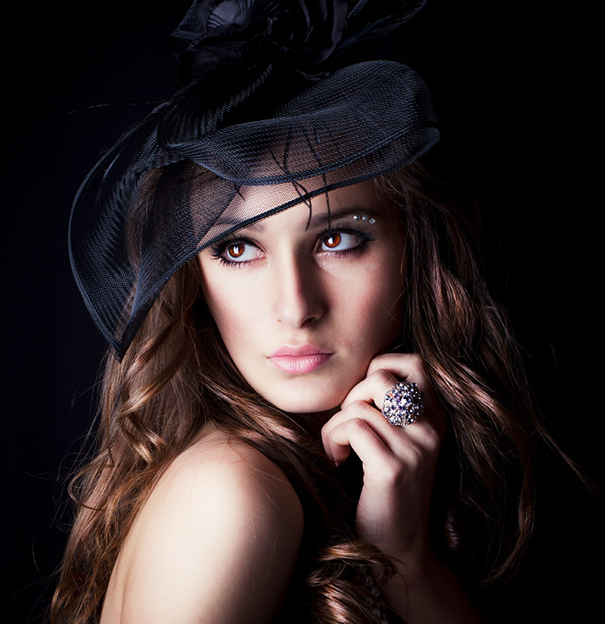
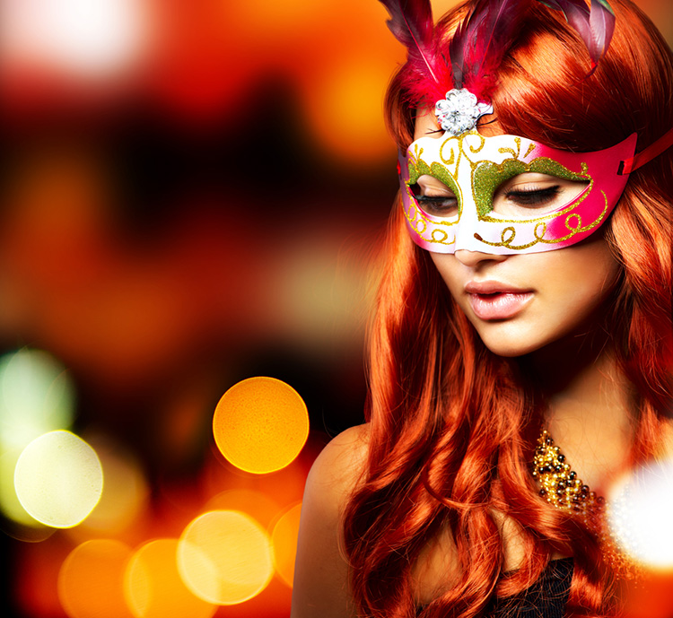
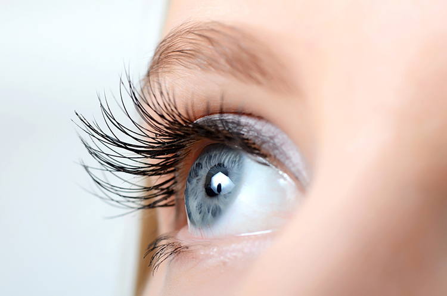
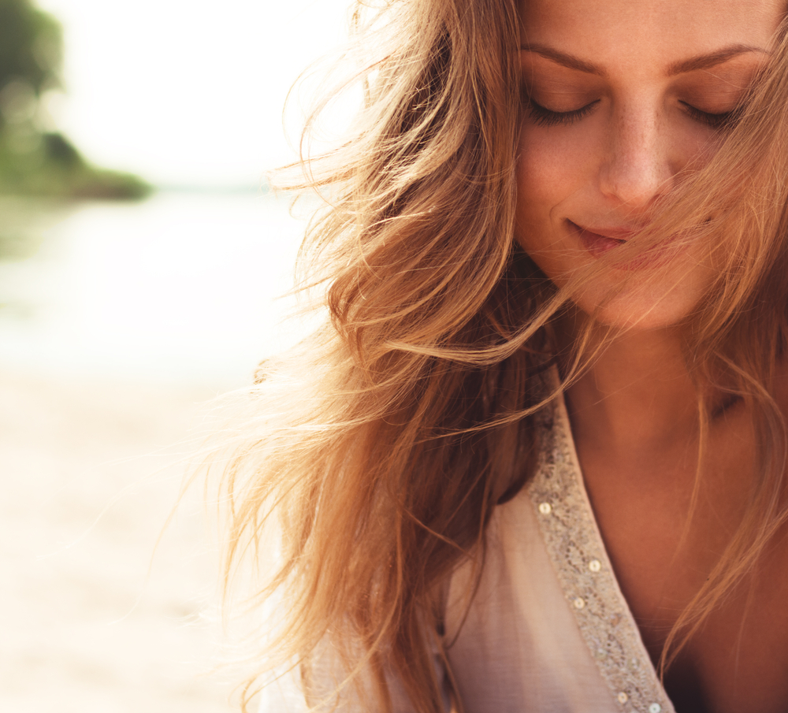
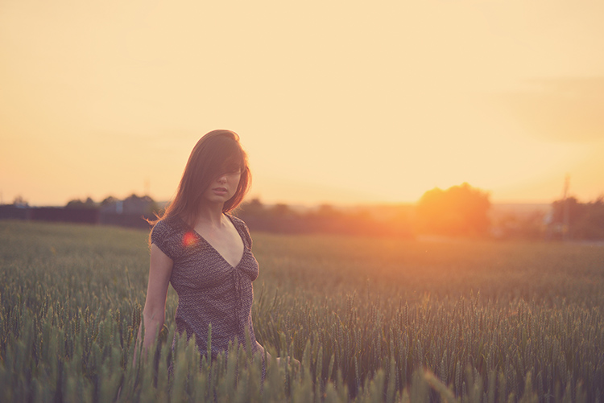
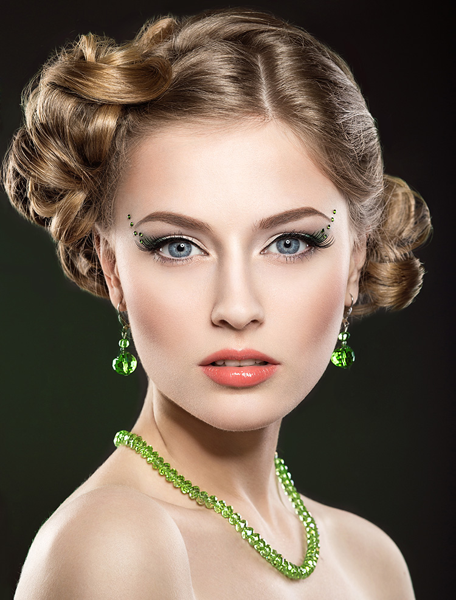

12 Oct 2019
Author : Arm Suphakit
เชื่อว่าช่างภาพทุกคนต้องเคยถ่าย Portrait หรือภาพบุคคลกันอยู่แล้ว การถ่ายแนวนี้เป็นที่นิยม เพราะส่วนใหญ่จะถ่ายได้ง่ายและไม่ซับซ้อนมาก สามารถใช้ตัวแบบเป็นคนใกล้ตัว เพื่อนฝูงหรือคนรักได้ เรามีเคล็ดลับ 8 ข้อ มาบอกเพื่อช่วยให้การถ่าย Portrait ของคุณดูสวยงามโดดเด่นน่ามองและเป็นมืออาชีพมากยิ่งขึ้น
แววตาของตัวแบบถือเป็นองค์ประกอบที่สำคัญที่สุดในการชมภาพ Portrait เพราะเราจะมองไปที่แววตาก่อน ช่างภาพบางคนทำพลาดไม่ได้โฟกัสไปที่ดวงตาของตัวแบบ แววตาของตัวแบบต้องคมกริบ ดังนั้นในการถ่ายต้องวัดแสงก่อน หากตัวแบบหรือวัตถุอยู่กลางภาพก็ใช้โหมดวัดแสงเฉลี่ยหนักกลาง (Center Weighted Metering) กดชัตเตอร์ลงครึ่งนึงเพื่อให้โฟกัสและวัดแสง เมื่อวัดแสงได้ค่อยล็อค AE หรือล็อคค่าแสงไว้ก่อน และถอยไปจัดองค์ประกอบภาพแล้วค่อยถ่าย ส่วนการโฟกัสให้เลือกจุดโฟกัสไปที่ตาของตัวแบบ อย่าลืมเรื่องการสื่ออารมณ์ของตัวแบบด้วยล่ะ เพราะหากตัวแบบไม่ได้มีอารมณ์ที่จะถ่ายภาพ ก็ไม่สามารถสื่ออารมณ์ไปถึงคนดูได้
เทคนิคหนึ่งที่จะช่วยให้ภาพ Portrait สวยงาม คือภาพต้องมีความชัดตื้นหรือที่เรียกว่า Bokeh ฉากหน้าชัดในขณะที่ฉากหลังเบลอ เป็นเคล็ดลับง่ายๆ เพื่อทำให้ตัวแบบที่จะถ่ายโดดเด่นขึ้นมาจากกลุ่มคนและละลายฉากหลังที่ไม่จำเป็นออก การถ่าย Bokeh ให้สวยงามนั้น ให้เลือกตั้งค่ารูรับแสง Aperture Priority หรือโหมดการตั้งค่ารูรับแสง เลือก f น้อย ๆ รูรับแสงกว้างอย่าง f1.4 ภาพจะมีความชัดตื้นมากกว่า f4 นอกจากถ่ายชัดตื้นแล้วก็ยังสามารถถ่าย Portrait ที่มีความชัดลึกหรือชัดทั้งภาพได้ แต่ต้องเพิ่มค่า f สูงๆ แทน
ช่างภาพหลายคนมักให้ความสำคัญกับเลนส์มาก เพราะเป็นตัวช่วยสำคัญที่จะทำให้ภาพออกมาสวยงาม สิ่งหนึ่งที่ต้องคำนึงคือทางยาวโฟกัสของเลนส์แต่ละตัว ในการถ่าย Portrait ให้เลือกตั้งแต่ 50mm-200mm ระยะนิยมคือ 50 mm กับ 85 mm เพราะ Perspective ของภาพจะไม่ผิดเพี้ยน เลนส์ตัวอื่นก็ถ่ายได้แต่ก็ต้องระวัง หากเลือกถ่ายที่ระยะ 17 mm อาจจะกว้างเกินไป จนทำให้ใบหน้าของตัวแบบผิดรูปไป และถ้าเลือกใช้เลนส์ 300mm ซึ่งเป็นเลนส์ telephoto ที่ถ่ายซูมได้ไกลมาก เลนส์จะบีบองค์ประกอบ รวมทั้งใบหน้าของตัวแบบให้เข้ามาใกล้ ทำให้ภาพดูไม่เป็นธรรมชาติ อีกปัจจัยหนึ่งที่ควรคำนึงคือรูรับแสงขนาดใหญ่ ช่วยละลายฉากหลังทำให้ได้ภาพหน้าชัดหลังเบลอ อย่าง f1.4 และ f1.8 หรือแม้กระทั่ง f1.2 เลนส์ถ่ายภาพดี ๆ ช่วยให้ได้แสงและความชัดลึกของภาพแตกต่างกันออกไป ซึ่งขึ้นอยู่กับงบประมาณในการเลือกซื้อเลนส์ของแต่ละคนด้วย
ภาพถ่าย Portrait จะดูดีที่สุดด้วยแสงจากธรรมชาติ หลักง่ายๆ คือต้องรู้ว่าเวลาไหนควรถ่ายหรือไม่ควรถ่าย ให้หลีกเลี่ยงถ่ายช่วงเวลากลางวันที่แดดจ้า เพราะจะทำให้เกิดเงาขนาดใหญ่ขึ้นบนใบหน้า แต่หากเลี่ยงไม่ได้ก็มีวิธีแก้ไขได้ (อ่านบทความ เคล็ดลับถ่ายภาพกับ 5 สภาพแสงสุดท้าทาย) ส่วนช่วงเวลาที่ดีที่สุดคือ Golden hour ก่อนดวงอาทิตย์ขึ้นและดวงอาทิตย์ตก เพราะแสงจะดูนุ่มนวลและมีแสงสีทองเรืองรอง นอกจากถ่ายข้างนอกแล้วการถ่ายในสตูดิโอก็สามารถควบคุมแสงไฟได้ด้วยตนเอง ส่วน White balance การตั้งค่าโทนสีของภาพก็ขึ้นอยู่กับสภาพแสงในตอนนั้น ถ้าไม่ได้ออกไปถ่ายภาพข้างนอกและเป็นแสงไฟปกติในบ้าน ให้ตั้งค่าเป็น Incandescent ถ้าจำเป็นต้องใช้แฟลชด้วยก็ให้เปลี่ยนไปตั้งค่า Flash แต่ถ้าสภาพแสงแต่ละที่ในภาพไม่เท่ากันให้ใช้ custom ซึ่งเป็นการตั้งค่าเองแต่ก็อาจจะเสียเวลาหน่อย
ในการถ่าย Portrait จะเห็นได้ว่ามีการถ่ายหลายรูปแบบ ถ่ายบุคคลพร้อมวิวทิวทัศน์หรือ ถ่ายเจาะเฉพาะตัวแบบ เพื่อให้เด่นที่หน้าหรือถ่ายครึ่งตัวก็ได้เหมือนกัน โดยพื้นฐานแล้วเทคนิคการจัดองค์ประกอบในการถ่าย Portrait ให้ดูน่าสนใจ ให้ใช้กฎสามส่วนและจุดตัดเก้าช่อง ตัวแบบจะอยู่ตรงกลางจุดนำสายตา ซึ่งทำให้ภาพดูน่าสนใจ แต่บางทีการจัดองค์ประกอบของภาพก็ขึ้นอยู่กับผู้ถ่ายด้วยว่าต้องการภาพแบบไหน
การเปลี่ยนรูปแบบของภาพทำให้ภาพสวยไปอีกแบบเหมือนกัน ช่างภาพทั่วไปจะถ่ายโดยตั้งค่ากล้องเป็น Portrait หรือถ่ายในแนวตั้ง วิธีที่ดีและง่ายที่สุดในการเปลี่ยน Perspective หรือมุมมองของภาพให้ต่างออกไป คือการลองถ่ายด้วยโหมด Landscape หรือแนวนอน
บางคนมักละเลยเรื่องนี้เพราะคิดว่าไม่สำคัญ ดังนั้นก่อนถ่ายภาพให้ใช้เวลาหาหัวข้อสนทนาคุยกับตัวแบบเพื่อให้เกิดความผ่อนคลาย เพราะโดยปกติเวลาถูกคนอื่นถ่ายภาพ เรามักจะเกิดความกังวลและความไม่มั่นใจ ภาพที่ออกมาก็เลยดูไม่เป็นธรรมชาติ ช่างภาพมืออาชีพมักจะมีวิธีง่ายๆ ที่จะเข้าถึงตัวแบบ ใช้การคุยและสร้างเสียงหัวเราะให้ตัวแบบ ควรให้ตัวแบบลืมว่ากำลังโดนถ่ายภาพอยู่ ภาพที่ได้จะออกมาเป็นธรรมชาติและสวยงามกว่า
บนใบหน้าของแต่ละคนจะมีมุมที่ดีที่สุดกันทั้งนั้น ขึ้นอยู่กับว่าช่างภาพจะหามุมของตัวแบบเจอมั้ย ยกตัวอย่างคนที่ผอมมาก ถ้าถ่ายตรงๆ ใบหน้าจะดูอ้วนและไม่มีมิติ ดังนั้นเวลาถ่ายควรให้ตัวแบบเอียงหน้าเล็กน้อย แล้วลองถ่ายไปเรื่อย ๆ เพื่อหามุมที่จะถ่ายภาพให้ออกมาสวยงาม ควรนึกเสมอว่าสิ่งสำคัญของการถ่าย Portrait คือการหามุมและอารมณ์ของตัวแบบที่จะดึงดูดผู้ชมภาพได้
